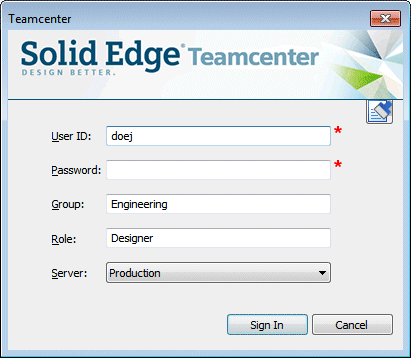
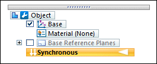
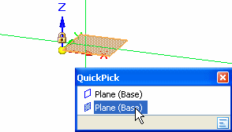
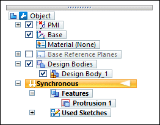
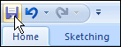

Activity: Create, save, and close a part document
In this activity, learn how to start Solid Edge with Teamcenter enabled and then use basic file operations. Learn how to create, save, and close files, how to assign properties to the document, and how to open existing files.
After completing this activity, you will be able to:
-
Determine your default modeling environment.
-
Open any of the Solid Edge environments.
-
Create a new Teamcenter-managed Solid Edge document.
-
Save a Teamcenter-managed Solid Edge document.
-
Close a document.
Instructions for loading the activity files are found in Activity data set and configuration requirements. The activities assume ISO templates are loaded.
On your desktop, double-click the Solid Edge icon  .
.
Notice the title bar of the start page indicates Solid Edge 2023 - Teamcenter.
The Teamcenter Integration for Solid Edge is enabled and you are working in a managed environment.
Click the File tab and choose Manage→Teamcenter.
The Teamcenter integration is only activated when Teamcenter is displayed in the window title bar.
Click the File tab and choose Manage→Teamcenter to turn Teamcenter on.
Click the File tab and choose Settings→Options→Helpers.
Ensure that the option, Start Part and Sheet Metal documents using this environment is set to Synchronous.
Your new Part and Sheet Metal documents are opened using the direct modeling capabilities available in the synchronous modeling environment.
Click OK.
Click the File tab and choose Settings→Options→Manage→General tab.
Clear the option, Do not show common property dialog.
Common property dialog boxes like the Upload dialog box, will show when you save an existing managed document to Teamcenter.
Click OK.
Click File menu→New→ISO Metric Part.
The training activities assume ISO templates are loaded for your use. Templates are delivered with Solid Edge for each environment: Assembly, Draft, Part, and Sheet Metal. For more information, see the Solid Edge help topic, Importing Solid Edge templates into Teamcenter.
The Teamcenter sign in dialog box is displayed.

The first time you access Teamcenter you must sign in.
Enter your Teamcenter User ID and Password, and then select the appropriate server.
Click Sign In.
Notice Teamcenter in the title bar.
The new part document is opened in the Teamcenter managed environment.
Locate the document name formula which is displayed in PathFinder and in the title bar: Object

Teamcenter uses objects to store information that describes each Solid Edge document, in addition to storing the document or file itself. The objects known as Item, Item Revision, and Dataset combine to fully describe the associated document
Once the document is saved, the document name formula is replaced by the value you define in the Helpers page of the Solid Edge Options dialog box.
Choose Home tab→Draw group→Rectangle by 3 Points.
Position the cursor over the base coordinate system so that the XY principal plane highlights, then press F3 or click the lock to select it.
You can use the QuickPick feature to make selecting the principal plane easier.

Notice the alignment lines attached to the cursor. The alignment lines are oriented to the principal plane you selected.
Click to define the start point of the rectangle.
Move your cursor to the right, and notice that the Width and Angle boxes update to reflect the current cursor position.
Position the cursor so that the Width value is approximately 65 mm and the Angle is exactly 0.00 degrees, then click to define the second point of the rectangle.
Position the cursor so that the Height value for the rectangle is approximately 55 mm, then click to define the third point of the rectangle.
The sketch region is formed when 2D elements form a closed area.
Choose Home tab→Select group→Select.
Position the cursor over the sketch region and click to select it.
The Select command bar is displayed vertically in the graphics window. It displays a list of possible actions and the available options for the current action.
An extrude handle is displayed near where you selected the sketch. It is used to construct the feature.
Position the cursor over the extrude handle, then click to select it.
Position the cursor below the sketch, type 30 mm in the dynamic input box, and then press Enter to define the extent for the feature.
The solid base feature is complete and the sketch is no longer displayed. Sketches are discarded after you construct a feature.
-
In PathFinder, clear the check box adjacent to Base.

The Base collector in PathFinder changes color and the base coordinate system is hidden in the graphics window.
-
Select the Fit command
 in the status bar at the bottom of the graphics window.
in the status bar at the bottom of the graphics window.
On the Quick Access toolbar, click Save

.The New Document dialog box is displayed whenever new files are created. Use this dialog box to assign attributes to the document to make it easier to manage.
The table cells indicated with red asterisks—Item ID, Revision, and Item Name—are required properties that must be defined for each managed document. You can type the information or have it generated for you.
Ensure the Item Type column is set to Item.
Once you assign an Item Type, that attribute becomes read-only.
Click Assign All to automatically assign an Item ID, Revision, and Item Name to the managed document.
Select the Dataset Description cell and type Part Created in Activity 1.
The Dataset Description is blank when a single new document is listed. The file name is used when multiple new files are shown. You can use this field to provide a description of the item, with a maximum of 240 characters.
To verify that all property data is entered correctly, click Validate  .
.
The Issues column displays a cell for each document with either a green background and  , or a red background and a
, or a red background and a  , to indicate whether the property data is entered accurately. Green cells indicate
no action is required. Red cells indicate problems that should be resolved before
continuing.
, to indicate whether the property data is entered accurately. Green cells indicate
no action is required. Red cells indicate problems that should be resolved before
continuing.
When the Issues column indicates , click Perform Actions  .
.
The formula in PathFinder and title bar now reflects the new attributes assigned to the document.
-
Select Teamcenter tab→Close.
Since no folder was specified on the New Document dialog box, by default the item is created in your Newstuff folder in Teamcenter.
The default folder is a configurable option in Teamcenter.
-
Click the File tab.
-
On the Open page under Files, select the document you saved in the previous step.
In Command Finder, type the term: close document.

To display results that contain your search term, click Enter.
In the Command Finder dialog box, hover over Close and notice how the display changes to demonstrate the location of the Close command.
-
In the Command Finder dialog box, click Close.
-
If you are prompted, click Perform Actions to upload the document into Teamcenter.
In this activity, you learned how to start Solid Edge in a Teamcenter-managed mode and how to determine your default modeling environment. You learned how to create, save, and close files, how to assign document properties that make files easier to manage, and how to open existing files from a managed environment.
Now you will be able to:
-
Determine your default modeling environment.
-
Create a new Solid Edge part in a managed environment.
-
Save a Solid Edge file in a managed environment.
-
Open an existing Solid Edge document.
-
Use Command Finder to locate and execute Solid Edge commands.
-
Close a managed file.
-
List the environments available when you work with Teamcenter-managed Solid Edge documents.
-
List two ways to open a new document. List three ways to save a document.
-
What are the three objects that combine to fully describe the associated document when you are working with Teamcenter?
-
Where can attributes, such as Item Name, be assigned to a document?
-
How can you access Help within Solid Edge?
-
What tool would you use to locate the Open command?
-
The environments available when you work with Teamcenter-managed Solid Edge documents are:
-
Part
-
Assembly
-
Sheet Metal
-
Draft
-
-
You can open a new document using several methods including:
-
Selecting File tab→New and selecting the appropriate template.
-
With a document open in Solid Edge, in the Teamcenter tab, choose New and then select a template from the list of templates available to you.
You can save a document by:
-
Selecting File button→Save.
-
Clicking the Save icon on the Quick Access toolbar.
-
Selecting File Menu→Save As (or Ctrl + S).
-
-
The object's Item, Item Revision and Dataset combine to fully describe the Teamcenter-managed document.
-
Attributes can be assigned to a document on the:
-
New Document dialog box for new documents.
-
Upload dialog box for existing documents.
-
-
You can access Solid Edge on-line Help by clicking the Help icon located at top-right of the window or by pressing F1.
-
You can use Command Finder
to locate the commands within Solid Edge.